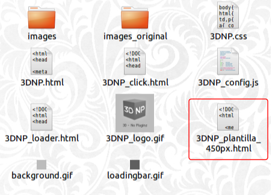
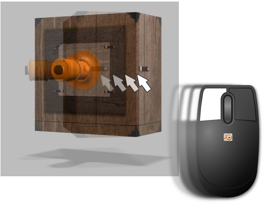
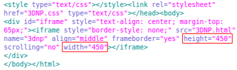

Interactividad en web
No es nuestra intención introducirnos en los lenguajes Python, HTML, CSS, JavaScript... así que vamos a facilitar todo lo necesario para nuestras presentaciones de 3DNP.
Cuando decimos "integración en web" nos referimos exclusivamente a visualizar nuestra virtualización con un navegador como Firefox, Internet Explorer o Safari.
Hemos preparado una plantilla HTML para visualizar en el centro de la pantalla virtualizaciones de 450x450px.
El código de la plantilla
Sólo hay que Copiar/pegar este código en un editor de texto y guardarlo con el siguiente nombre y extensión 3DNP_plantilla_450px.html. El directorio de destino será la carpeta HTML de 3DNP.
<!DOCTYPE html PUBLIC "-//W3C//DTD HTML 4.01//EN" "http://www.w3.org/TR/html4/strict.dtd">
<html>
<head>
<meta content="text/html; charset=ISO-8859-1" http-equiv="content-type">
<title>3DNP_plantilla_450px</title>
<style type="text/css"></style><link rel="stylesheet" href="3DNP.css" type="text/css">
</head>
<body>
<div id="iframe" style="text-align: center; margin-top: 65px;">
<iframe style="border-style: none;" src="3DNP.html" name="3dnp" align="middle" frameborder="yes" height="450" scrolling="no" width="450"></iframe>
</div>
</body>
</html>
Una vez hecho esto, basta con ejecutar 3DNP_plantilla_450px.html para interactuar con nuestra virtualización. Tal y como hemos dicho debe ejecutarse con un explorador del tipo Firefox, Safari, Internet Explorer...
3DNP_plantilla_450px
No hace falta tener ningún conocimiento de HTML para poder adaptar la plantilla a cualquier otro tamaño de renders. Sólo hay que acceder al código del archivo 3DNP_plantilla_450.html con un editor de textos como hicimos con el javascript y cambiar los valores de height (alto) y width (ancho) ajustándolos a los de los renders que hayamos hecho.
Con algunos conocimientos de diseño web se puede mejorar su aspecto con imágenes de fondo, título...